Fine-Tuning ModernBERT For Classification Tasks on Modal
Author
Chris Levy
Published
December 29, 2024
Modified
December 29, 2024
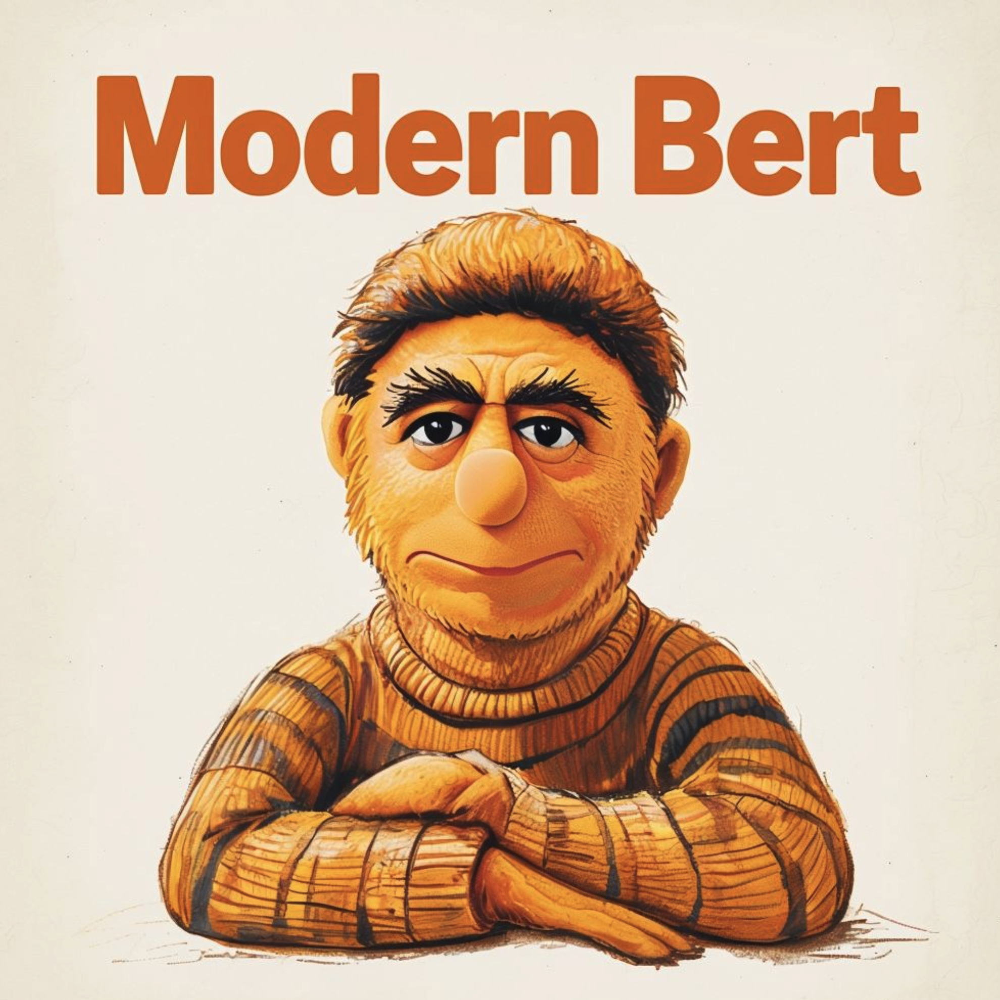
Intro
First go and read the ModernBert blog post announcement here. If you are interested I wrote a little about transformers (encoders and decoders) in my previous blog posts here and here. I also have written previously about using Modal here and here and here.
Encoder Models Generate Embedding Representations
This section gives a very quick rundown on how encoder models encode text into embeddings.
Code
from transformers import AutoModel, AutoTokenizermodel_id ="answerdotai/ModernBERT-base"tokenizer = AutoTokenizer.from_pretrained(model_id)model = AutoModel.from_pretrained(model_id)model
The reason we get an embedding for each token (11 in this example) is because BERT ( ModernBERT) are contextual embedding models, meaning they create representations that capture each token’s meaning based on its context in the sentence. Each token gets its own 768-dimensional embedding vector.
Code
for position inrange(len(inputs.input_ids[0])): token_id = inputs.input_ids[0][position] decoded_token = tokenizer.decode([token_id]) embedding = outputs.last_hidden_state[0][position]print(f"Position {position}:")print(f"Input Token ID: {token_id}")print(f"Input Token: '{decoded_token}'")print(f"Embedding Shape: {embedding.shape}")print("-"*50)
For downstream tasks with BERT-like models (including ModernBERT), there are typically two main approaches for generating a single embedding for the entire input text:
[CLS] Token Embedding (Most Common)
Code
# Get the [CLS] token embedding (first token, index 0)cls_embedding = outputs.last_hidden_state[0][0] # Shape: [768]cls_embedding.shape
torch.Size([768])
Mean Pooling (Alternative Approach)
Code
# Mean pooling - take average of all tokensmean_embedding = outputs.last_hidden_state[0].mean(dim=0) # Shape: [768]mean_embedding.shape
torch.Size([768])
The [CLS] token is specifically designed to capture sentence-level information and is most commonly used for classification tasks. This is because BERT models are trained to use this token to aggregate information from the entire sequence.
Fine-Tuning ModernBERT for Classification
When I first learned about fine-tuning transformer encoder models for classification tasks, my favorite resource was the book Natural Language Processing with Transformers: Building Language Applications with Hugging Face. It’s still relevant and a great resource. In particular, checkout Chapter 2 which walks through classification tasks. In that chapter the authors first train a simple classifier on top of the [CLS] token embeddings. In that case the model is frozen and only used as a feature extractor. The other approach is to fine-tune the entire model together with a classification head. It’s this latter approach that I’ll show you how to do here.
Place your wandb api key in a .env file like this: WANDB_API_KEY=<>
create the filetrainer.py and place it at the root of your project folder alongside the .env file. The full code is below but you can also find it here.
Training Code
Here is all the code for the trainer.py file.
At the beginning of the file you can adjust the dataset, model, learning rate, batch size, epochs, class labels, column names, etc.
It’s expected to use a Hugging Face dataset and it’s expected that you will have to change these variables based on the dataset you are using.
You can also make edits anywhere else in the code as well but when you are first starting out it’s best to keep the code simple and only make changes to the variables at the beginning of the file.
When you run modal run trainer.py it will execute the code within the function main().
By default it trains a model and then evaluates it on the validation split
You can do whatever else you want here in the main() function. For example, you could comment out the training logic and just run an evaluation on some checkpoint.
There are two main modal functions which each run in their own container. See the functions decorated with @modal.method(), which are train_model and eval_model.
If you want to run different training runs or evaluation runs just edit the file and kick off the jobs by executing modal run trainer.py from the command line. Remember modal will take care of spinning up the containers and running the code!
You can use the command modal run --detach trainer.pywhich lets the app continue running even if your client disconnects.
In either case you will see live logs directly in your local terminal, even though the containers are running in the cloud.
You can also follow along with logs and container metrics in the Modal UI dashboard.
All the datasets and models are stored in the Modal volumes. You can see them in the Modal UI dashboard.
Here are is the trainer.py file. You can also find it here on github.
# ruff: noqaimport osimport shutilimport modalfrom dotenv import load_dotenvfrom modal import Image, build, enter# ---------------------------------- SETUP BEGIN ----------------------------------#env_file =".env"# path to local env file with wandb api key WANDB_API_KEY=<>ds_name ="dair-ai/emotion"# name of the Hugging Face dataset to useds_name_config =None# for hugging face datasets that have multiple config instances. For example cardiffnlp/tweet_evaltrain_split ="train"# name of the tain split in the datasetvalidation_split ="validation"# name of the validation split in the datasettest_split ="test"# name of the test split in the dataset# define the labels for the datasetid2label = {0: "sadness", 1: "joy", 2: "love", 3: "anger", 4: "fear", 5: "surprise"}# Often commonly called "inputs". Depends on the dataset. This is the input text to the model.# This field will be called input_ids during tokenization/training/eval.input_column ="text"# This is the column name from the dataset which is the target to train on.# It will get renamed to "label" during tokenization/training/eval.label_column ="label"checkpoint ="answerdotai/ModernBERT-base"# name of the Hugging Face model to fine tunebatch_size =32# depends on GPU size and model sizeGPU_SIZE ="A100"# https://modal.com/docs/guide/gpu#specifying-gpu-typenum_train_epochs =2learning_rate =5e-5# learning rate for the optimizer# This is the logic for tokenizing the input text. It's used in the dataset map function# during training and evaluation. Of importance is the max_length parameter which# you will want to increase for input texts that are longer. Traditionally bert and other encoder# models have a max length of 512 tokens. But ModernBERT has a max length of 8192 tokens.def tokenizer_function_logic(example, tokenizer):return tokenizer(example[input_column], padding=True, truncation=True, return_tensors="pt", max_length=512)wandb_project ="hugging_face_training_jobs"# name of the wandb project to usepre_fix_name =""# optional prefix to the run name to differentiate it from other experiments# This is a label that gets assigned to any example that is not classified by the model# according to some probability threshold. It's only used for evaluation.unknown_label_int =-1unknown_label_str ="UNKNOWN"# define the run name which is used in wandb and the model name when saving model checkpointsrun_name =f"{ds_name}-{ds_name_config}-{checkpoint}-{batch_size=}-{learning_rate=}-{num_train_epochs=}"# ---------------------------------- SETUP END----------------------------------#if pre_fix_name: run_name =f"{pre_fix_name}-{run_name}"label2id = {v: k for k, v in id2label.items()}path_to_ds = os.path.join("/data", ds_name, ds_name_config if ds_name_config else"")load_dotenv(env_file)app = modal.App("trainer")# Non Flash-Attn Image# image = Image.debian_slim(python_version="3.11").run_commands(# "apt-get update && apt-get install -y htop git",# "pip3 install torch torchvision torchaudio",# "pip install git+https://github.com/huggingface/transformers.git datasets accelerate scikit-learn python-dotenv wandb",# # f'huggingface-cli login --token {os.environ["HUGGING_FACE_ACCESS_TOKEN"]}',# f'wandb login {os.environ["WANDB_API_KEY"]}',# )# Flash-Attn Image# https://modal.com/docs/guide/cuda#for-more-complex-setups-use-an-officially-supported-cuda-imagecuda_version ="12.4.0"# should be no greater than host CUDA versionflavor ="devel"# includes full CUDA toolkitoperating_sys ="ubuntu22.04"tag =f"{cuda_version}-{flavor}-{operating_sys}"image = ( modal.Image.from_registry(f"nvidia/cuda:{tag}", add_python="3.11") .apt_install("git", "htop") .pip_install("ninja", # required to build flash-attn"packaging", # required to build flash-attn"wheel", # required to build flash-attn"torch","git+https://github.com/huggingface/transformers.git","datasets","accelerate","scikit-learn","python-dotenv","wandb", ) .run_commands("pip install flash-attn --no-build-isolation", # add flash-attnf'wandb login {os.environ["WANDB_API_KEY"]}', ))vol = modal.Volume.from_name("trainer-vol", create_if_missing=True)@app.cls( image=image, volumes={"/data": vol}, secrets=[modal.Secret.from_dotenv(filename=env_file)], gpu=GPU_SIZE, timeout=60*60*10, container_idle_timeout=300,)class Trainer:def__init__(self, reload_ds=True):import torchself.reload_ds = reload_dsself.device = torch.device("cuda") if torch.cuda.is_available() else torch.device("cpu")@build()@enter()def setup(self):from datasets import load_dataset, load_from_diskfrom transformers import ( AutoTokenizer, )from transformers.utils import move_cache os.makedirs("/data", exist_ok=True)ifnot os.path.exists(path_to_ds) orself.reload_ds:try:# clean out the dataset folder shutil.rmtree(path_to_ds)exceptFileNotFoundError:passself.ds = load_dataset(ds_name, ds_name_config)# Save dataset to diskself.ds.save_to_disk(path_to_ds)else:self.ds = load_from_disk(path_to_ds) move_cache()# Load tokenizer and modelself.tokenizer = AutoTokenizer.from_pretrained(checkpoint)def tokenize_function(self, example):return tokenizer_function_logic(example, self.tokenizer)def compute_metrics(self, pred):""" To debug this function manually on some sample input in ipython you can create an input pred object like this: from transformers import EvalPrediction import numpy as np logits=[[-0.9559, 0.7553], [ 2.0987, -2.3868], [ 1.0143, -1.1551], [ 1.3666, -1.6074]] label_ids = [1, 0, 1, 0] pred = EvalPrediction(predictions=logits, label_ids=label_ids) """import numpy as npimport torchfrom sklearn.metrics import f1_score# pred is EvalPrediction object i.e. from transformers import EvalPrediction logits = torch.tensor(pred.predictions) # raw prediction logits from the model label_ids = pred.label_ids # integer label ids classes labels = torch.tensor(label_ids).double().numpy() probs = logits.softmax(dim=-1).float().numpy() # probabilities for each class preds = np.argmax(probs, axis=1) # take the label with the highest probability f1_micro = f1_score(labels, preds, average="micro", zero_division=True) f1_macro = f1_score(labels, preds, average="macro", zero_division=True)return {"f1_micro": f1_micro, "f1_macro": f1_macro}@modal.method()def train_model(self):import wandbimport torchimport osfrom datasets import load_from_diskfrom transformers import ( AutoConfig, AutoModelForSequenceClassification, DataCollatorWithPadding, Trainer, TrainingArguments, ) os.environ["WANDB_PROJECT"] = wandb_project# Remove previous training model saves if exists for same run_nametry: shutil.rmtree(os.path.join("/data", run_name))exceptFileNotFoundError:pass ds = load_from_disk(path_to_ds)# useful for debugging and quick training: Just downsample the dataset# for split in ds.keys():# ds[split] = ds[split].shuffle(seed=42).select(range(1000)) num_labels =len(id2label) tokenized_dataset = ds.map(self.tokenize_function, batched=True)if label_column !="label": tokenized_dataset = tokenized_dataset.rename_column(label_column, "label") data_collator = DataCollatorWithPadding(tokenizer=self.tokenizer)# https://www.philschmid.de/getting-started-pytorch-2-0-transformers# https://www.philschmid.de/fine-tune-modern-bert-in-2025 training_args = TrainingArguments( output_dir=os.path.join("/data", run_name), num_train_epochs=num_train_epochs, learning_rate=learning_rate, per_device_train_batch_size=batch_size, per_device_eval_batch_size=batch_size,# PyTorch 2.0 specifics bf16=True, # bfloat16 training# torch_compile=True, # optimizations but its making it slower with my code and causes errors when running with flash-attn optim="adamw_torch_fused", # improved optimizer# logging & evaluation strategies logging_dir=os.path.join("/data", run_name, "logs"), logging_strategy="steps", logging_steps=200, eval_strategy="epoch", save_strategy="epoch", load_best_model_at_end=True, metric_for_best_model="f1_macro", report_to="wandb", run_name=run_name, ) configuration = AutoConfig.from_pretrained(checkpoint)# these dropout values are noted here in case we want to tweak them in future# experiments.# configuration.hidden_dropout_prob = 0.1 # 0.1 is default# configuration.attention_probs_dropout_prob = 0.1 # 0.1 is default# configuration.classifier_dropout = None # If None then defaults to hidden_dropout_prob configuration.id2label = id2label configuration.label2id = label2id configuration.num_labels = num_labels model = AutoModelForSequenceClassification.from_pretrained( checkpoint, config=configuration,# TODO: Is this how to use flash-attn 2?# attn_implementation="flash_attention_2",# torch_dtype=torch.bfloat16, ) trainer = Trainer( model, training_args, train_dataset=tokenized_dataset[train_split], eval_dataset=tokenized_dataset[validation_split], data_collator=data_collator, tokenizer=self.tokenizer, compute_metrics=self.compute_metrics, ) trainer.train()# Log the trainer script wandb.save(__file__)def load_model(self, check_point):from transformers import AutoModelForSequenceClassification, AutoTokenizerimport torch model = AutoModelForSequenceClassification.from_pretrained( check_point,# TODO: Is this how to use flash-attn 2?# attn_implementation="flash_attention_2",# torch_dtype=torch.bfloat16, ) tokenizer = AutoTokenizer.from_pretrained(check_point)return tokenizer, model@modal.method()def eval_model(self, check_point=None, split=validation_split):import osimport numpy as npimport pandas as pdimport torchimport wandbfrom datasets import load_from_diskfrom sklearn.metrics import classification_report os.environ["WANDB_PROJECT"] = wandb_projectif check_point isNone:# Will use most recent checkpoint by default. It may not be the "best" checkpoint/model. check_points =sorted( os.listdir(os.path.join("/data/", run_name)), key=lambda x: int(x.split("-")[1]) if x.startswith("checkpoint-") else0 ) check_point = os.path.join("/data", run_name, check_points[-1])print(f"Evaluating Checkpoint {check_point}, split {split}") tokenizer, model =self.load_model(check_point)def tokenize_function(example):return tokenizer_function_logic(example, tokenizer) model.to(self.device) test_ds = load_from_disk(path_to_ds)[split] test_ds = test_ds.map(tokenize_function, batched=True, batch_size=batch_size)if label_column !="label": test_ds = test_ds.rename_column(label_column, "label")def forward_pass(batch):""" To debug this function manually on some sample input in ipython, take your dataset that has already been tokenized and create a batch object with this code: batch_size = 32 test_ds.set_format('torch', columns=['input_ids', 'attention_mask', 'label']) small_ds = test_ds.take(batch_size) batch = {k: torch.stack([example[k] for example in small_ds]) for k in small_ds[0].keys()} """ inputs = {k: v.to(self.device) for k, v in batch.items() if k in tokenizer.model_input_names}with torch.no_grad(): output = model(**inputs) probs = torch.softmax(output.logits, dim=-1).round(decimals=2) probs = probs.float() # convert to float32 only for numpy compatibility. # TODO: Related to using flash-attn 2return {"probs": probs.cpu().numpy()} test_ds.set_format("torch", columns=["input_ids", "attention_mask", "label"]) test_ds = test_ds.map(forward_pass, batched=True, batch_size=batch_size) test_ds.set_format("pandas") df_test = test_ds[:]def pred_label(probs, threshold):# probs is a list of probabilities for one row of the dataframe probs = np.array(probs) max_prob = np.max(probs) predicted_class = np.argmax(probs)if max_prob < threshold:return unknown_label_intreturn predicted_classfor threshold in [0, 0.1, 0.2, 0.3, 0.4, 0.5, 0.6, 0.7, 0.8, 0.9]:print("-"*60)print(f"{threshold=}\n") df_test[f"pred_label"] = df_test["probs"].apply(pred_label, args=(threshold,))print(f"Coverage Rate:\n") predictions_mapped = df_test[f"pred_label"].map({**id2label, unknown_label_int: unknown_label_str})print("Raw counts:")print(predictions_mapped.value_counts())print("\nProportions:\n")print(predictions_mapped.value_counts(normalize=True))print(f"\nConditional metrics (classification report on predicted subset != {unknown_label_str})") mask = df_test[f"pred_label"] != unknown_label_int y = np.array([x for x in df_test[mask]["label"].values]) y_pred = np.array([x for x in df_test[mask][f"pred_label"].values]) report = classification_report( y, y_pred, target_names=[k for k, v insorted(label2id.items(), key=lambda item: item[1])], digits=2, zero_division=0, output_dict=False, labels=sorted(list(range(len(id2label)))), )print(report)# --- Overall Accuracy (count "Unknown" as incorrect) ---# If ground truth is never 'unknown_label_int', then any prediction of "Unknown" is automatically wrong. overall_acc = (df_test["label"] == df_test[f"pred_label"]).mean()print(f"Overall Accuracy (counting '{unknown_label_str}' as wrong): {overall_acc:.2%}")print("-"*60)print("Probability Distribution Max Probability Across All Classes")print(pd.DataFrame([max(x) for x in df_test["probs"]]).describe())# Ensure wandb is finished wandb.finish()@app.local_entrypoint()def main(): trainer = Trainer(reload_ds=True)print(f"Training {run_name}") trainer.train_model.remote()# Will use most recent checkpoint by default. It may not be the "best" checkpoint/model.# Write the full path to the checkpoint here if you want to evaluate a specific model.# For example: check_point = '/data/run_name/checkpoint-1234/' check_point =None trainer.eval_model.remote( check_point=check_point, split=validation_split, )
Run The Trainer
All of these training runs can be executed from the command line by running modal run trainer.py after making minor edits to the trainer.py file. You can even run them all in parallel, because Modal will take care of spinning up the containers and running the code!
Here are some random screen shots from the Modal UI dashboard showing containers, GPU metrics, volumes for storing datasets and checkpoints, and log outputs.
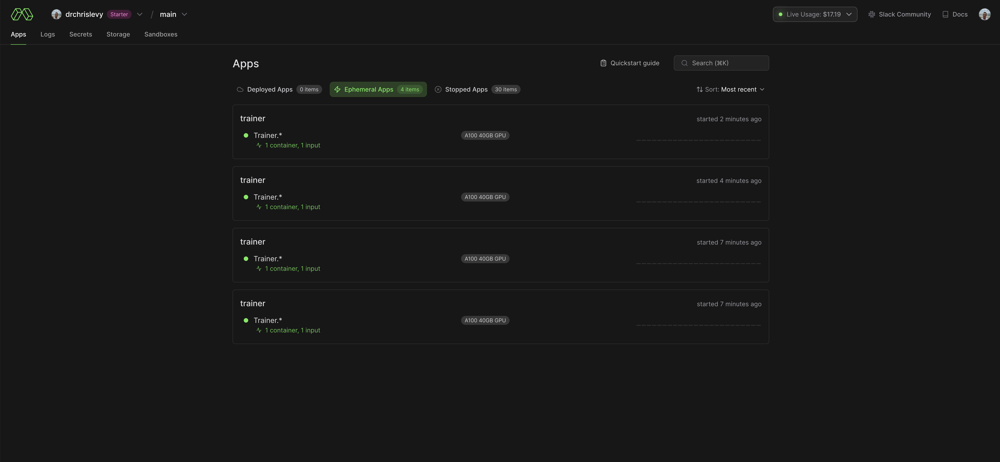
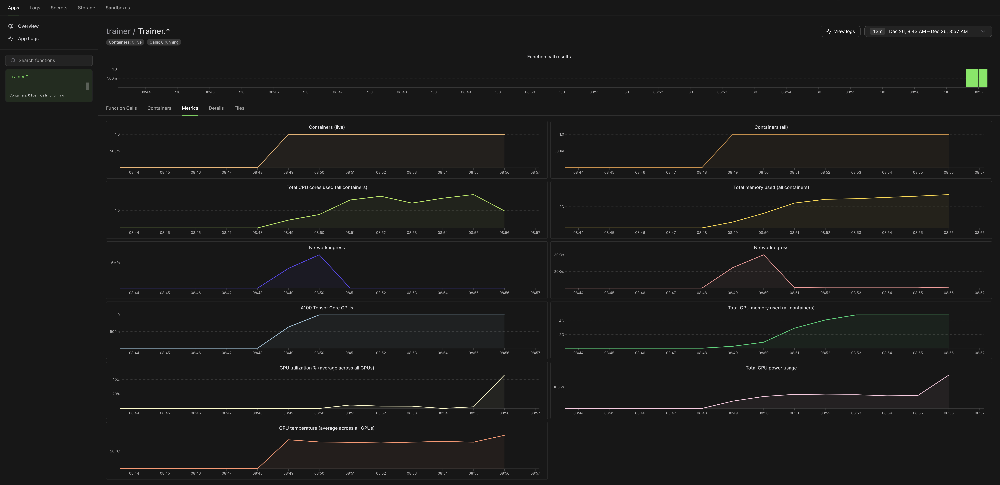
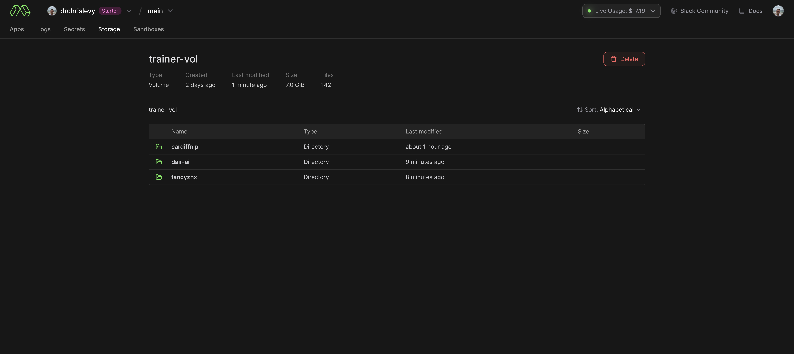
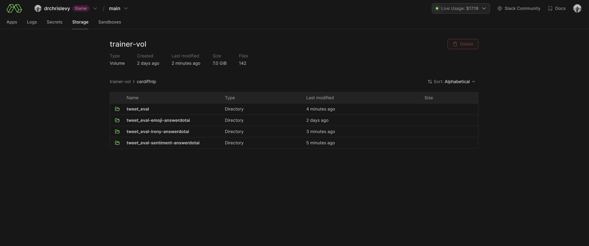
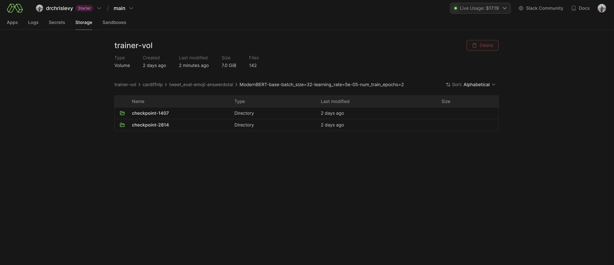
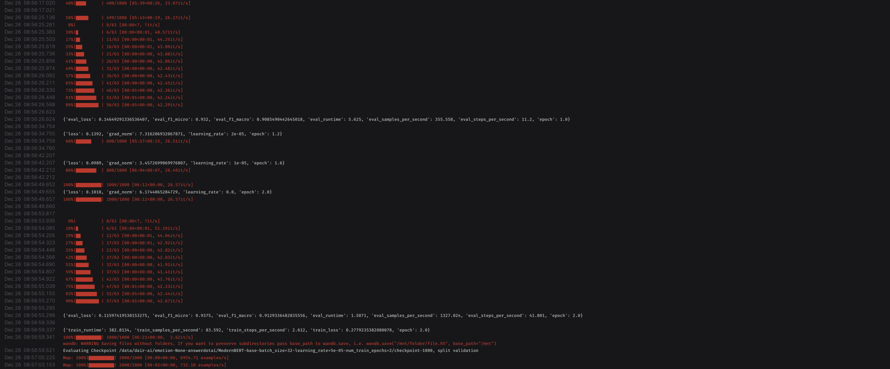
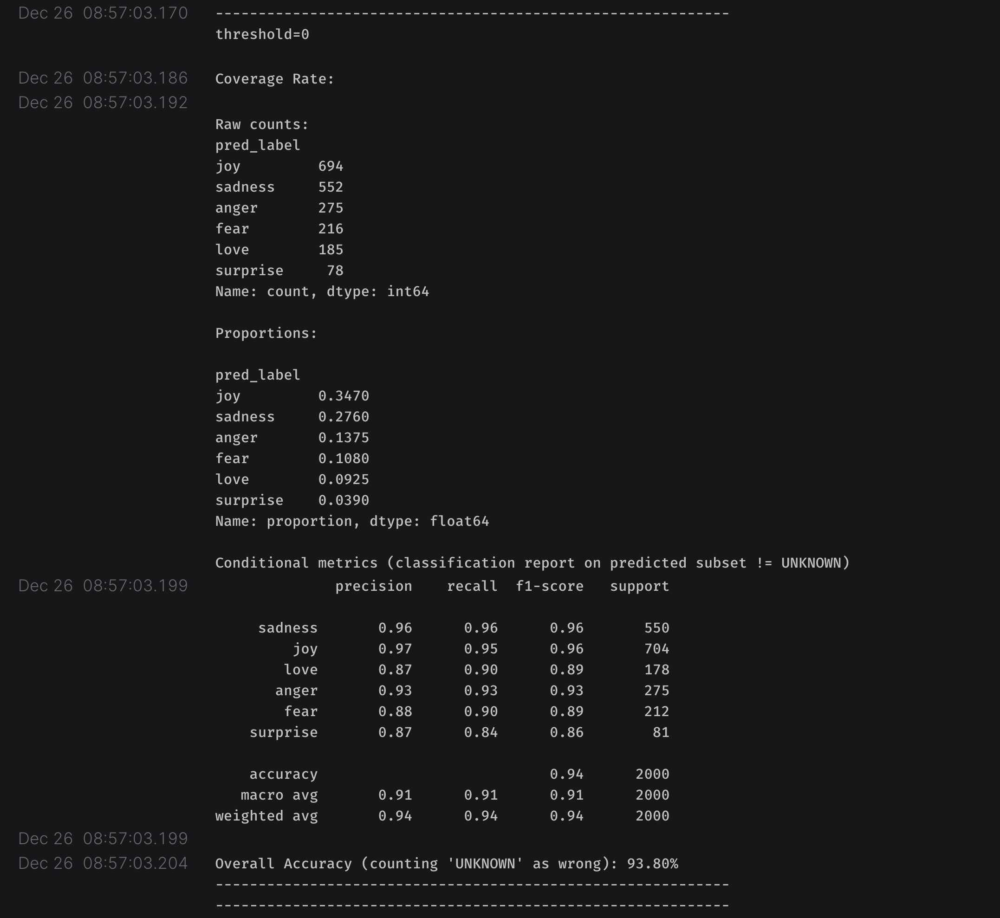
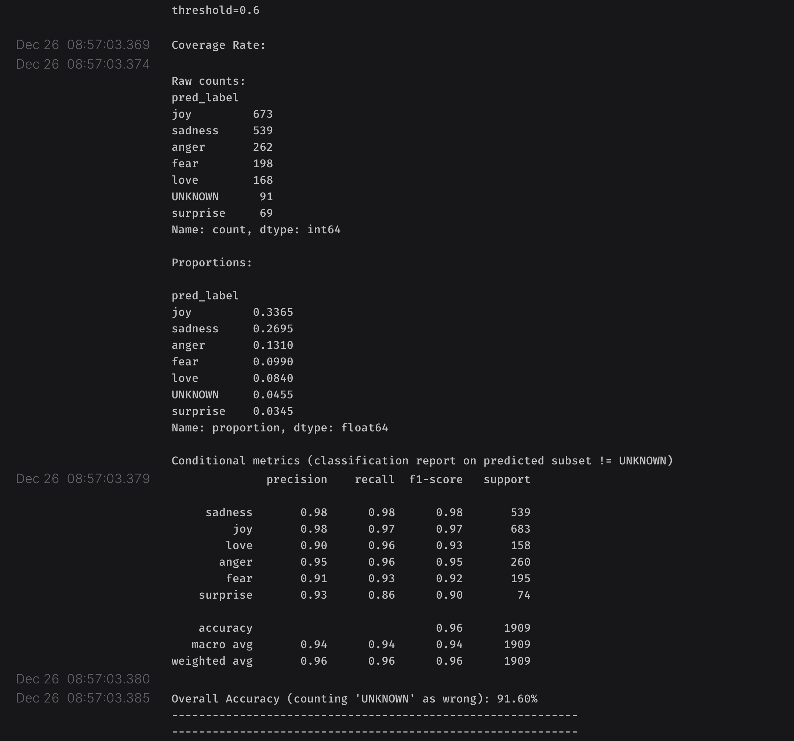
Here are some screen shots from the wandb dashboard. There are public wandb runs for each of the training runs below.
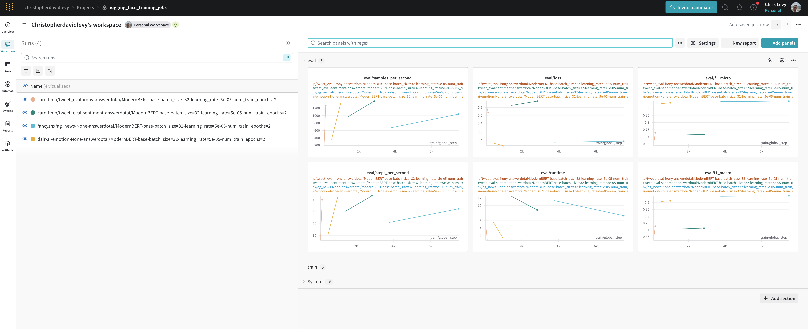
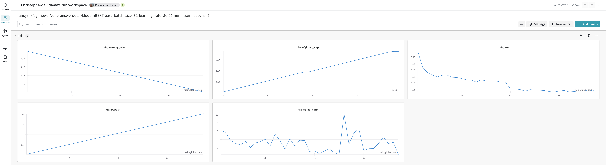
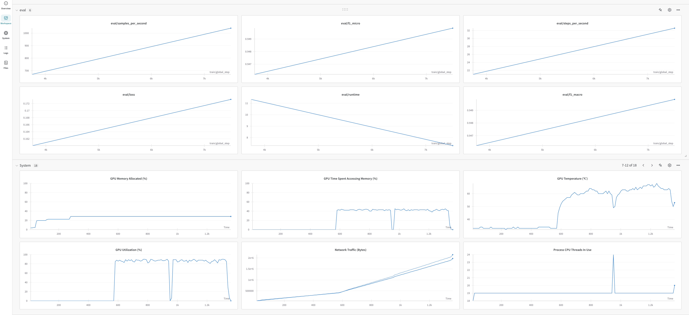
Emotion Dataset
By default the trainer will use the "dair-ai/emotion" dataset which predicts the emotion of a text.
You can easily switch to a different dataset, in this case I used the "fancyzhx/ag_news" dataset. All I switched in the trainer.py file were these lines:
To test out the longer context window of ModernBERT, I created a synthetic dataset with longer texts. These texts consists of synthetic social media posts. For each row in the dataset there is a list of input tweets concatenated together and a corresponding label. I made this dataset using various LLMS such as gpt-4o-mini, claude-3-5-sonnet-20241022, gemini-2.0-flash-exp, and deepseek-chat-v3. The prompts for creating the dataset are in the prompts.py file which can be found here. The system prompt was also crafted mostly by an LLM and I made some minor edits to it. The dataset is just a toy dataset and should not be used for anything serious. It probably has issues since I hacked it together rather quickly.
I uploaded the dataset to the Hugging Face Hub and you can find it here.
To run the trainer on this dataset make these edits to the trainer.py file:
I hope this code can start as a launching point for your own fine-tuning experiments with encoder models and ModernBERT. If you were not familiar with Modal, I hope this shows you how easy it is to get started. I think minor changes may be needed to get this training with flash attention 2. You will see some commented out parts of my code with regards to choosing attn_implementation="flash_attention_2". I’m not sure if that is needed or not. I think I am installing the flash attention 2 package but I’m not sure if it’s being used during training. If anyone knows, hit up on X. I did try running different variations but couldn’t really see how to tell if it was all running properly or not.